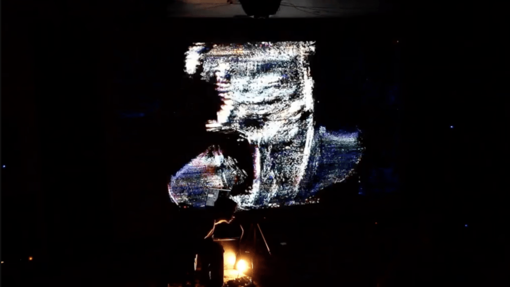

The last entry left off describing the question of framing a toy. In my humble opinion, a toy is rarely enough to sustain a meaningful performance. You need dramaturgy and intention. How do you start and end a performance?
My answer for how to start was simpler:
Dim the house lights to black, enter the scene, turn on a spotlight so the webcam has something to see
Play the viola through the guitar pedal without the MaxMSP patch or the projections
Fade in sounds from MaxMSP
Fade in the projections
Play for ~25 mins
Once I get going on the viola, I can go for a while. Having been improvising for almost 10 years, I trusted myself that I could sustain something for 25 minutes.
But how to end it? Endings are hard.
I didn’t want to simply fade everything out, break character, and nod. There would be too much going on just to shut it all down and smile. I wanted to find an ending that could comment on the performance, maybe challenge an idea that the performance presents.
I remember long conversations with Tuli Bera and Rin Peisert about endings. Tuli and Rin are 2 incredible Chicago-based movement-action artists whom I’ve had long collaborative relationships and friendships with. We talked about taking time on stage for reflection; subverting theatrical expectations. I credit them for helping me transcend some of my artistic boundaries.
Going back to the setup of the performance: a performer is playing a viola vertically in the dark, facing 90-degrees off-center from the audience, sitting in front of a webcam that captures the torso and instrument, with a large projection screen behind. Conceptually, thinking about this setup, we can draw connections to how we interact with technology: We use social media to make our presence and ideas bigger than our physical bodies. Amplification and recontextualization. We obscure ourselves, curate ourselves, we humblebrag, influence, advertise...
After trying out many ideas, I finally settled on something that felt right:
After ~25 minutes of playing, use the looper on the pedalboard to make noise-based loop
Stop playing the viola, regard at it as an object, decide to be finished with it, and set it down
Hit a cue on the computer, then bend over and look at the webcam so it captures my face
The cue removes the image distortions in Isadora one-by-one, leaving my bar face on the screen. Me, looking directly at the webcam, thus looking at the audience through the projection screen.
-
Lean back in the chair, turn towards the audience, take off my hood to “reveal” myself to the audience, break the 4th wall.
Look back at the camera, and slowly turn it towards the audience, bringing their image to the projection screen, fade in house lights.
Hit one last cue to fade out the loop and fade in a soundfile. The soundfile would have ticking sounds, foreshadowing some event. This ticking would sync up with some final video manipulations. Time the soundfile and projections so they switch off simultaneously, ending the performance.
-
Get up and walk into the audience, take a seat with them, wait for the performance to end.

Photo credit: Violeta Lenz

Why was l compelled to do all this?
For the ending, I needed to change every aspect of the performance. The viola, previously being the main character, is discarded. The sound, which was previously all generated live by a human, becomes automatic. The visuals, which used to be distortions of my body and instrument, become my naked face and then the audience. My gaze, which wasn’t a performance element, becomes the main focus, first virtually, and then directly at the audience before disappearing. The audience, who were voyeurs, are now being objectified by the camera. My body, once the performer, joins the audience who is now watching themselves.
Here’s a video of the premiere performance in its entirety at Elastic Arts in Chicago. The ending starts around 27’00.
When I scripted this, I saw it as commentary on our digital culture. Of course, each audience member will find their own ways of making sense of the ending. I think I’ll leave the theatrical analysis there.
Don’t Touch That
I mentioned in the last post that I wanted to create an environment where I wouldn’t have to interact much with the computer. How do you create a dynamic system that creates captivating audio-visual environments with limited button-pushing?
Typically, I program my MaxMSP patches to provide as much real-time flexibility as possible. However, in this project, I would have enough flexibility with my instrument and pedals. My goal for the patch was to add rhythmic, timbral, and ornamental components to elevate my viola sound, but not to add any more harmonic information.
In the patch, I programmed 4 granulators whose gain is individually controlled by faders on a Korg nanoKontrol. Each granulator is programmed to re-sculpt my live viola sound in specific ways at specific playback rates - if you tell it to play back the sound twice as fast, it will sound an octave higher; half speed results in sounding down an octave. Since I didn’t want the computer to add additional harmonic complexity to my viola sound, I programmed the granulators to play back at -1 octave, concert pitch (0 change), +1 octave, and +2 octaves. This way, I could have better control over the harmonic material while still having ornamental and timbral flexibility with the faders.
For the projections, Isadora’s interface lets you create scenes, and each scene can be a unique video-manipulation program with varying degrees of freedom. I wanted to be able to cycle through these scenes and their individual quarks during the performance, and I wanted to use my viola to control how the scenes evolve, and when they change. Thus, I told MaxMSP to track my loudness, and I set a loudness threshold that would trigger a brief signal whenever that threshold is passed. Every signal would change some small aspects of an Isadora scene, and every-so-often, the signal would trigger a scene change. This allowed me to speed up or slow down projection changes using my instrument. If I wanted rapid change, I could play rapid loud sounds that would repeatedly cross the threshold. If I wanted visual stasis, I’d play under the threshold.
These 2 systems together offered me the right balance of flexibility and control. I could reshape my live sound with a few faders, and I could control the variance of the projections using my viola.
That’s it for analysis of my 2022 viola-based solo set. The next entry will discuss my 2023-24 project where I attempted solo performance art for the first time.